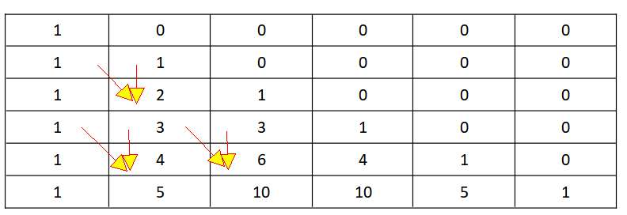
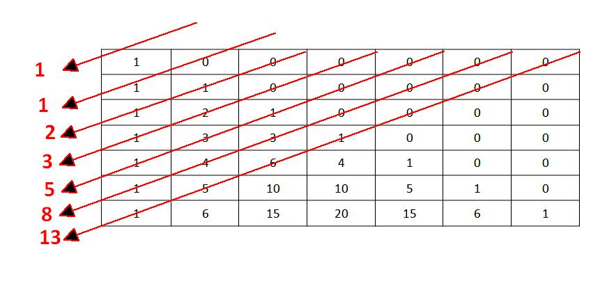

Nombre:
Ejercicio 1 Arrays
1. Crea una funcion que reciba un numero indeterminado de Arrays de tamaños distintos crea una funcion function ej1Mezclar(array1, array2 ) que los mezcle y los muestre en la web.
let array1 = [1,2,4,5] ; let array2 = [6,7,1]; let array3 = [100]; let array4 = [6,7,1]
ej1Mezclar( array1, array2) // [1,6,2,7,4,1,5]
ej1Mezclar( array1, array2,array3) // [1,6,100,2,7,4,1,5]
Mostrar aqui resultado
Muestra los datos aqui
Ejercicio 3 Conjuntos
1. Crea una función crearConjunto que dado un numero indeterminado de parametros, nos devuelva un array que
con
solo los que NO estan repetidos.
CrearConjunto(7,2,3,4,555,5,5,5,5,5,5,5,5,5,3,3,3,1,1,1) debe devolver [7,2,3,4,5,1]
2. Añade una funcion unirConjuntos(c1,c2) que una ambos conjuntos eliminando los repetidos
unirConjuntos( [7,2,3,6,5,1] ,[7,2,3,4,5,1,10,9] ) debe devolver [7,2,3,4,5,1]
3. Añade una funcion disjuntosConjuntos(c1,c2) que una ambos conjuntos eliminando los que estan en ambos
disjuntosConjuntos( [7,2,3,6,5,1] ,[7,2,3,4,5,1,10,9] ) debe devolver [6,10,9]
4. Añade una funcion MostrarConjunto() muestre como un string el array
Se valorara el uso de las funciones propias de los conjuntos
Muestra los datos aqui
4. Metodos Funcionales 1
(los ejercicio de esto punto deben hacerse con metodos funcionales si no no vale)
◦ Crea una función tresMitad(array) que recorra un array de cadenas y nos devuelva
la cadena de tres que aparecen en la mitad y los dos laterales.
Si tiene menos de 3 se devuelve todo.
Si tiene pares para mitad se escoge mitad-1.
tresMitad(['pepes','Lopez','c','javascript','java']) // 'epe','ope','c','asc','jav',
Muestra los datos aqui
5. Metodos Funcionales 2
◦ Crea una función sumarPotencias2Indices que nos devuelva el resultado de multiplicar
cada numero por su posicion elevado a 2 y sumarlos
Por ejemplo
sumarPotencias2Indices([1,3,4,2,1])
// [1*1 + 3*2 + 2*4 + 2*8 + 1*16] = 1+6 + 8 + 16 + 16 = 47
Muestra los datos aqui
6. Metodos Funcionales 3
◦ Crea una función ordenTamaño que tenga por entrada un array de strings
y nos lo devuelva ordenados por su tamaño y si son iguales por
el orden alfabetico de la primera letra
ordenTamaño ([“hola”, “mv”, “adios”, “xz” , “ b”])
=> [“ b”, “mv”, “xz” , “hola”,“adios”]
Muestra los datos aqui
7. Metodos Funcionales 4
◦ Crea una función sumasLetras(ArrayDoble) que sume todos los elementos de un array de arrays . Puede haber letras con los valores Hexadecimales A = 10 B=11 … F= 15 … si sale algo mas que F es un error
sumasLetras ([ 1,2], [“B”,1, 1], [1,3,”A”] ]) => 1+2+11+1+1+1+3+10 = 30
Muestra los datos aqui
8. Metodos Funcionales 5
• Crea una función contarCadenas(array) que Dado un array con palabras repetidas,
debes agruparlas y contar cuántas veces aparece cada una, usando únicamente reduce..
const palabras = [ "js", "html", "css", "js", "css", "js", "react" ];
Debes usar reduce para genera un array de arrays donde Cada sub-array tenga el formato:
["palabra", cantidad]
• contarCadenas(palabras) // [ ["js", 3], ["html", 1], ["css", 2], ["react", 1] ]
• Ordena el resultado de mayor a menor cantidad:
[ ["js", 3], ["css", 2], ["html", 1], ["react", 1] ]
Muestra los datos aqui
Ejercicio 9. Arrays Multidimensional
Dado un valor num. haz un array del triangulo de pascal y muestralo por pantalla
Para hacer el triangulo solo debes ver que
Cada celda es la suma de las dos anterior superiores
triangulo[i][1] = (triangulo[i][0] + triangulo[i-1][0])
si el valor esta definido en ese parametro si no 0. Por ejemplo para n=6

Muestra los datos aqui
Ejercicio 10. Arrays Multidimensional fibonaci
Calcula un termino de la secuencia de fibonaci usando el triangulo de pascal
sabiendo que se calcula con las diagonales de este triangulo
fib(n) = triangulo[n][0] +triangulo[n-1][1] + … + triangulo[0][n]

Muestra los datos aqui